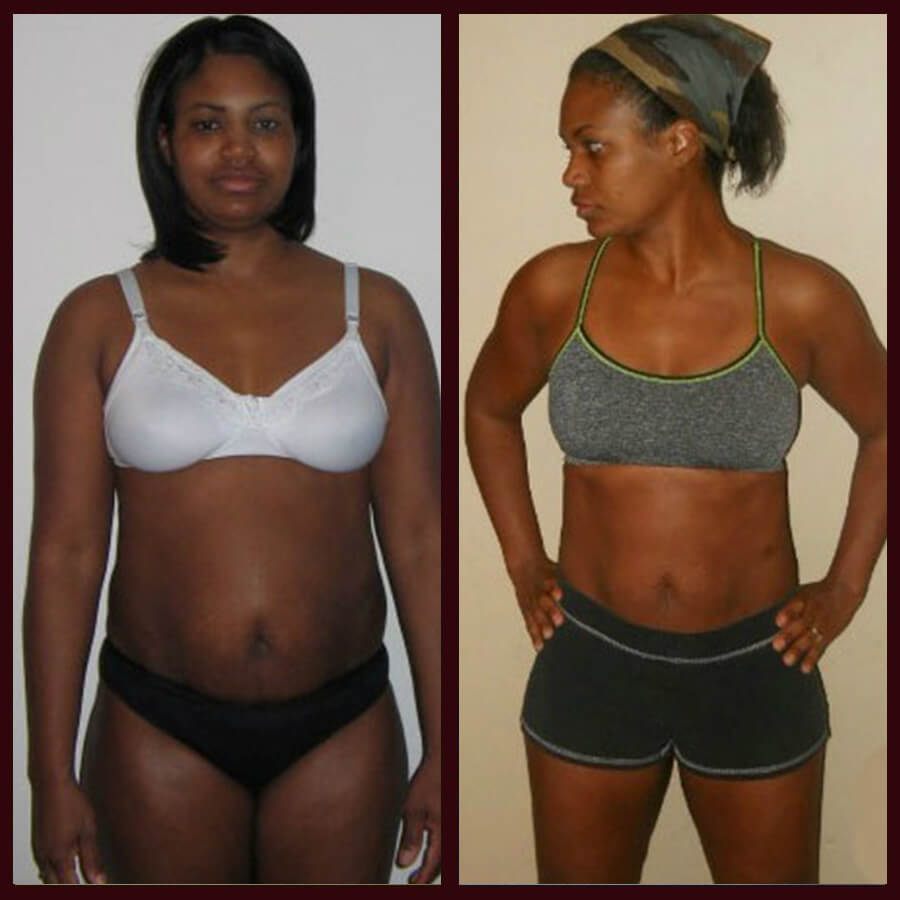

Redactado por Clara Hernández |  2 391 558 |
2 391 558 |  13
13
(Healthy Mum Daily) - Durante los últimos tres meses, nuestros lectores se han vuelto locos debido a este producto de Internet que está ayudando a miles de mujeres en Guatemala y en todo el mundo a bajar de peso. Este remedio revolucionario, al que algunos llaman "El Santo Grial de la pérdida de peso", ha sido presentado en un sinnúmero de programas de televisión. Se ha demostrado que es seguro usarlo con regularidad y, lo mejor de todo, que es totalmente asequible para cualquier persona.
Su increíble eficacia fue clínicamente probada y no solo quema rápidamente la grasa corporal, sino que también elimina todas las toxinas perjudiciales del organismo y acelera el metabolismo, todo ello sin dañar el sistema inmunológico.
Como solemos decir cuando investigamos las últimas tendencias en el mundo de las dietas, bajar de peso suele parecer un desafío imposible y, con demasiada frecuencia, los resultados son dolorosamente decepcionantes. Sin embargo, después de un exhaustivo proceso de investigación que incluyó entrevistas con personas que hacen dieta usando este mismo sistema, estamos más que entusiasmados con este producto. Sigue leyendo y descubrirás por qué creamos este reporte especial.
La razón por la cual la mayoría de las dietas fallan, en nuestra opinión, es que imponen restricciones poco realistas para el día a día. Algunas abogan por comer toneladas de proteínas, mientras que otras hacen hincapié en evitar los carbohidratos. En cualquier caso, es necesario hacer cambios bastante drásticos en el tipo de alimentos que se consumen y cuándo se consumen. En este informe especial, echamos una mirada con profundidad a una tendencia de pérdida emergente y prometedora de peso que creemos que va a marcar la diferencia y que no requiere perder tiempo en el gimnasio ni reducir el número de calorías que consumes... Y, lo mejor de todo, es que tiene un precio muy asequible.
Seguramente oíste hablar de los comprimidos efervescentes en todas las noticias. Contiene cafeína, taurina, vitaminas В2, В6, В12 y РР, ácido pantoténico, ácido succínico, extracto de guaraná e inositol, cuyo efecto está científicamente probado para eliminar la grasa corporal. En estudios realizados por la reconocida institución de investigación en salud UCLA de Los Ángeles, Estados Unidos, quedó demostrado que acelera el metabolismo y las capacidades para quemar la grasa oculta del organismo en un 318% cuando se toma regularmente. Sin embargo, se descubrió que tiene un inconveniente importante, y es que el 90% de las imitaciones de los productos que hay en el mercado NO son productos puros. La mayoría fluctúa entre unos niveles de pureza del 60-70%, así que usamos el producto original para estudiar la diferencia. La fórmula de afirma que proporciona el 95% de cafeína, taurina y extracto de guaraná. Así que, para decirlo de una manera simple, estábamos muy intrigados.
También nos dimos cuenta de que la gente que tomaba había experimentado los resultados de adelgazamiento más impresionantes que habíamos visto jamás. Los testimonios afirman que el uso de este producto provoca una pérdida significativa de peso, proporciona más energía y generalmente una vida diaria más saludable. Si tienes dudas, debes saber que no eres el único. Cuando oímos hablar por primera vez de estos comprimidos adelgazantes , se nos encendió el radar de dietas relámpago muy rápidamente.
Sin embargo, a medida que comenzamos a investigar las innumerables historias de éxito reportadas por personas de todo el mundo, decidimos que esta tendencia de pérdida de peso era digna de un examen más detallado. Además, nos pareció de particular interés que estas personas no cambiaron significativamente su estilo de vida actual.
Aunque teníamos muchas dudas sobre su eficacia, queríamos averiguar por nosotros mismos si este producto de verdad era capaz de hacer todo lo que aseguraba. La mayoría de las historias de éxito hablan de tomar regularmente durante al menos un mes para conseguir los mejores resultados de adelgazamiento. Después de investigar mucho, lo pusimos a prueba.
ha sido clínicamente probado para:- normalizar el equilibrio hormonal del organismo;
- regular los procesos metabólicos, fortalecer la piel, el cabello y las uñas;
- equilibrar el metabolismo, ayudar a la digestión de nutrientes;
- reducir el colesterol, regular el funcionamiento del tracto gastrointestinal;
- eliminar las toxinas y el exceso de fluidos, quemar las grasas y favorecer la renovación de células corporales.
Puesta a prueba de a la prueba
en forma de comprimidos efervescentes nos llegó 4 días después de haber hecho el pedido en línea.

En conclusión, si sigues un poco dudoso acerca de la eficacia de esta dieta, tienes que probarla por ti mismo. Nosotros comprobamos que los resultados son reales. En Healthy Mum Daily hemos probado más de 100 dietas cada año, y es cierto que al principio teníamos nuestras dudas, pero se nos disiparon todas muy rápidamente. Después de llevar a cabo nuestro propio estudio, nos alegra mucho ver que la gente está teniendo éxito con la dieta.
IMPORTANTE: en las pruebas clínicas quedó demostrado que se debe usar el producto de manera CONSTANTE para lograr resultados similares.
Chicos, no solemos hacer estos informes especiales porque la verdad es que hay un montón de productos basura por ahí afirmando ser la solución definitiva para la pérdida de peso. Pero este producto era demasiado bueno para no darlo a conocer al público. ¡Probadlo y contadnos qué os pareció!
¿Quieres compartir algún consejo para la próxima semana? Si es así, envíanos un correo electrónico.